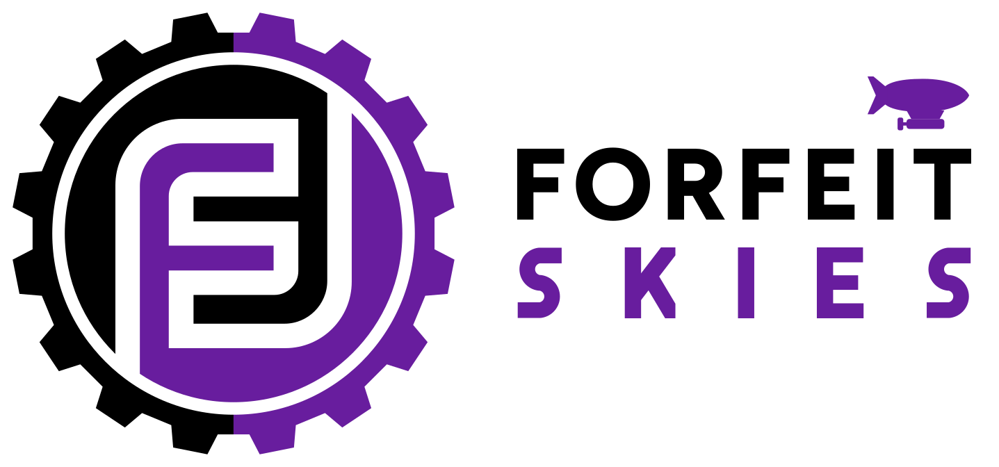

Install once, then it keeps itself updated.
The pack is set to use 8 GB. That's right for most gaming PCs.
| Your PC's RAM | Set Maximum memory to |
|---|---|
| 32 GB or more | 8192 MB to 10240 MB |
| 16 GB | 8192 MB (leave as is) |
| 8 GB | 6144 MB, and close Chrome/Discord video while playing |
To change it: select Forfeit Skies → Edit → Settings → Java tab → tick Memory → set Maximum memory allocation.
Forfeit Skies. Server Address:When new mods or fixes are added, they download automatically the next time you press Launch. The server updates itself too, at its daily restart.
World: Tectonic + Terralith + Biomes O' Plenty + Regions Unexplored (huge mountains, hundreds of biomes), YUNG's dungeons and mineshafts, When Dungeons Arise, Towns & Towers, Mowzie's Mobs bosses, Farmer's Delight cooking, Sophisticated Backpacks and Storage.
| Problem | Fix |
|---|---|
| Game crashes or won't start | In Prism: select the pack → Edit → Minecraft Log → Upload, and post the link in Discord. |
| Very low FPS | Options → Video Settings: Render Distance 8 to 10, turn Clouds off. Don't add shaders (they break airships right now). |
| "Out of memory" crash | Raise memory (step 4), but never above about half your PC's RAM. |
| Kicked for "flying" | Shouldn't happen (flight is allowed for airships). Tell Rob if it does. |
| Want to add a mod yourself? | Don't. Your game would no longer match the server. Ask in Discord and it gets added for everyone. |